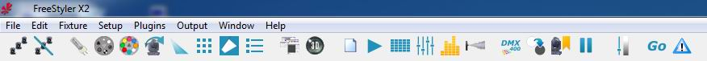
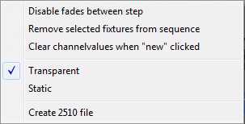

Table of Contents
Sequence Creator / Editor
A sequence can be considered as a series of several snapshots, where each DMX channel will take the desired value.
It's up to the light jockey to design the scenes and take snapshots.
Steps can then be played during live shows, stepped either by a time frame or in time to the music beat.
The sequence editor is able to save / load / edit the sequences.
IMPORTANT NOTE
This article assumes you're running FreeStyler with configured fixtures.
Open the sequence editor
Launch the sequence editor (Window → Create Sequence)
{kind=link}

or use the shortcut in the toolbar
{kind=link}
{kind=link}
The sequence editor will open
Preset: See Preset
{kind=link}
{kind=link}
Create a sequence
When you launch the sequence editor, it starts with a new sequence, ready to take snapshots, so there is no need to start a new sequence. You are able to add steps with the add scene button.
Remember that this is a snapshot, it will only record the changes made since you added the step. So if you made a change to a fixture, you might want to make sure you make the same change on the next steps otherwise it will not be recorded and another sequence may change it. (In some cases, this is desirable, like when you want to make a sequence that changes colours, but you want to allow another sequence to set the intensity.)
When you start changing a value in the fixture control by pulling a fader or pushing a button then the button in front of the fader will change status and become active.
It is with this button possible to select between Snap, Fade and Not recorded.
Snap: During playback, change this channel value instant.

Fade: During playback, fade this channel value.
Not Recorded: This channel will not be recordet.
{kind=link}
{kind=link}
{kind=link}
{kind=link}
As you start alternating any of the fixture controls then a yellow star will appear on the selected fixtures.
You may select and de-select fixtures during the creation of sequence the sequence and all the fixtures which has been alternated during the sequence will be marked with this yellow star.
{kind=link}
When you want to create a new sequence, use the new sequence button.
{kind=link}
By default, a sequence is limited to 15 steps, but you can change this in the Freestyler.ini file.
Common mistake:
A common mistake is to add an extra scene by pressing “+” at the end of editing.
“+” is adding a new empty scene. Not adding the scene you just have edited.
Example:
From scratch, 1 Scene sequence:
1: Editing Scene 1
2: Save sequence.
From scratch, 2 Scene sequence:
1: Editing Scene 1
2: Press “+”
3: Editing Scene 2
4: Save sequence.
From scratch, extra unwanted scene added:
1: Editing Scene 1
2: Press “+”
3: Editing Scene 2
3 Press “+”
4: Save sequence.
This gives a sequence with 3 scenes and Scene 2 and 3 will be the same as no editing are done after pressing “+” the last time.
Save a sequence
Once you have taken several snapshots, it's time to save your current sequence so that you will able to play it during your shows. Click on the quick save button if you have already saved it with a name, or you can use the save as button to give it a new name.
{kind=link}
{kind=link}
Enter a file name.
You can additional chose to tick on some of the “Add to” options but this can also be done manually later.
Add to cue: Add this sequence to the cue in the cue window. See Playback Sequence
Add to buttons: Add this sequence to an override button in the override window. See Override buttons
Add to existing cuelist: Add this sequence to the cue list in the selection box
Add to new cuelist: Creates a new cue list with the name entered in the box bellow and add the sequence to it.
NOTE: you can manage your sequences by creating folders (e.g. one folder for each group, or separate folders for colours/intensities/movements).
NOTE: These sequence files can easily be copied from one PC to another (if you have the same fixture setup).
{kind=link}
Load a sequence
You can load an existing sequence and edit it (insert steps, change fade, time, etc.).
{kind=link}
Edit a sequence
When editing a sequence, you can move from one step to another with the browse steps buttons.
{kind=link}
You can choose to:
{kind=link}
{kind=link}
{kind=link}
It's also possible to use shortcuts to copy, cut, paste or undo the current step.
{kind=link}
With the sequence editor, you are able to:
{kind=link}
{kind=link}
{kind=link}
{kind=link}
Offline Mode
Sequence editor opens in a normal but if Cue or Sub master window is open then it will open in Offline mode. “Offline Mode” text will be shown.
In normal mode the user will have normal control over the fixture meaning if a moving head is controlled with Pan and Tilt then it moves according to the control.
In “Offline mode” the moving head will be controlled be the cue.
The fixture control / changes done by the user will in this case be shown in the 3D easy view.
This makes it possible to edit / create sequences during a show without actually disturbing the running light.

To get back to normal mode close the “Cue” and “Sub-Master” windows and reopen sequence editor.
Note: Having Sound to Light (S2L) running will also cause Offline Mode.
Options
“Options…” is found in the lower left corner of the Sequence editor.

Disable fades between step
This function removes fade time between scenes during editing playback.
This is useful when long times between scenes are used and a fast scroll between the scenes in edit mode is needed.
When this is “on” the scenes appear immediately when the “Left” or Right” arrows are pressed without waiting for the steps to fade.
Remove selected fixtures from sequence
During programming, it may turn out that a fixture you've set values for doesn’t fit into your scene. With this option, it is possible to remove the unwanted fixture without having to re-make the sequence again.
Clear channel values when “new” clicked
This function clears all values by setting them to 0.
NOTE. Clear is not the same as default values.
Transparent or
Static
The sequence editor can be set to record the scenes in two modes, Transparent or Static.
In transparent mode, the sequence editor only records the channels that are changed or set to “Fade” / “Snap” in fader panels (not those set to “Off”). This makes it possible for other sequences to change the other channels not included when this sequence is running.
In static mode, all channels are recorded by the Sequence editor. This makes it possible to set the whole light to a wanted state and then record all channels.
As an example on these two modes imagine a setup where a lot of sequences are controlling various fixtures via sub masters. Some sequences control movement, some colors and other gobos.
In certain situations, the lights are to be in a well-defined setup. This could be lights on the audience and the scene in an introduction. This is set once and recorded as one static scene.
Attach the sequence to an override button and it is now possible to have all the light in various settings and then by pressing this one override button, all of the programmed lights will be set for the introduction scene.
Status of the Transparent/Static mode seen in the lower right corner of the Sequence editor.
Create 2510 file
Create a file for the Martin 2510, which is a DMX recorder that can play back sequences.
{kind=link}
Run a sequence
Once you are proud of your design, it's time to test it.
You can use the preview button.
{kind=link}
When you running a show you will run one or more sequences simultaneously. All sequences can be replayed in the cue which takes up to 20 sequences at the time. The sequences are to be added to this cue list, which are shown in the CUE window in order to be replayed.
{kind=link}
An additional way to use a sequence is to use an override buttons
. The override button will not replay a sequence but only set one scene as it is an override. If the sequence are to be used as override then make a sequence dedicated to the override containing only one scene.
Note if there are more scenes in the sequence then only the first scene will be set by the Override button.
As mentioned above under “Save a Sequence” you can tick on if freestyler automatically are to add the sequence to a cue list or an override button. But this can also be done manually later.
{kind=link}
FX 
FreeStyler has a building FX generator that help you generating sequence and thereby reducing the amount of work when multiple fixtures are to be used in a sequence.
Learn more about FX here.